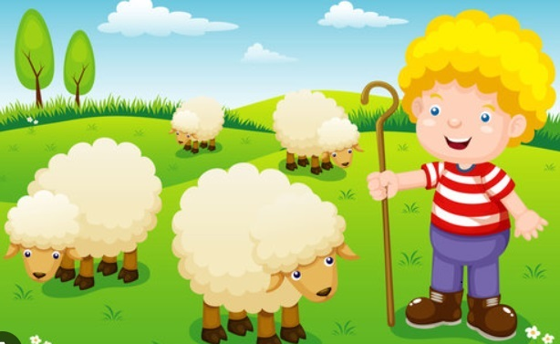

A shepherd boy in a village used to take his herd of sheep across the fields near the forest. He
felt this
job was very dull and wanted to have some fun. One day while grazing the sheep, he shouted, "Wolf! Wolf! The
wolf is carrying away a lamb!" Farmers working in the nearby fields came running for help but didn’t find
any wolf. The boy laughed and replied, "It was just fun. There is no wolf here".

The boy played a similar trick repeatedly for many days. After some days, while the shepherd boy was in
the
field with the herd of sheep, suddenly, a wolf came out from the nearby forest and attacked one of the
lambs. The boy was frightened and cried loudly, "Wolf! Wolf! The wolf is carrying a lamb away!" The farmers
thought the boy was playing mischief again. So, no one paid attention to him and didn’t come to his help.
Moral: No one believes a liar even if they speak the truth once.
There was a king with only one leg and one eye but was generous and competent as a ruler. One day
while walking in his palace, the king noticed the portraits of his ancestors along the hallway. He also
wanted his portrait painted by an artist but was unsure how it would turn out due to his physical
abnormalities. The King invited all the painters across the kingdoms and asked who could paint a beautiful
picture of him. The painters were confused about how to make a beautiful picture of the King with only one
leg and one eye.
All the painters politely refused to make a painting of the King. Then one young painter came forward and
ensured to make a beautiful portrait of the King. After a few days, the young painter unveiled the portrait
in the court in which the King was seen sitting on the horse with one leg visible, holding his bow and
aiming the arrow with one eye closed. There was no sign of physical deficiencies in the king in the
painting. The King was pleased to see that the painter had creatively presented the King’s positive
characteristics but not highlighted the abnormalities.
Moral: Look at the positive aspects of someone without emphasizing the limitation.